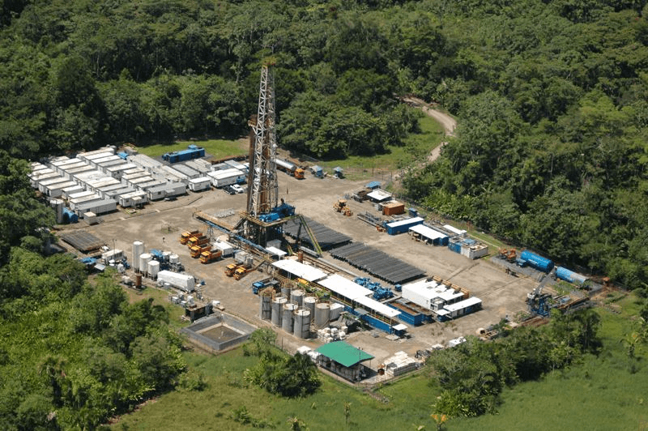

Home > News > Sinopec News
Alice West 1A Well unearths high production oil flow
October 23,2018
Ecuador Andes Project has tested production of layer M1 Alice West 1A exploratory well. During the test, high production was unearthed for as much as 10.42 bpd with0.2% water content and API 22.6. After several days of the test, the bottom hole pressure and crude oil output of the well have remained stable and the test result of produc-tion is satisfying. In 2013, a heavy oil layer of 33 feet thick was discovered in the same region; however it was hard to develop. and SIPC Argentina achieves shallow layernatural gas exploration breakthrough SIPC Argentina has carried out operation test on the 264-27 1m section of EH-175 well and stably produced natural gas more than2.1x 104 cubic meters, marking a breakthrough of shallow layer natural gas exploration. The Company has quickly improved the natural gas production through old wellsthat are located in the gas area with facilities whining EH Block, and also utilized technologies such as AVO to identify more gas areas to evaluate and analyze so as tofasten the production of shallow layer natural gas.
